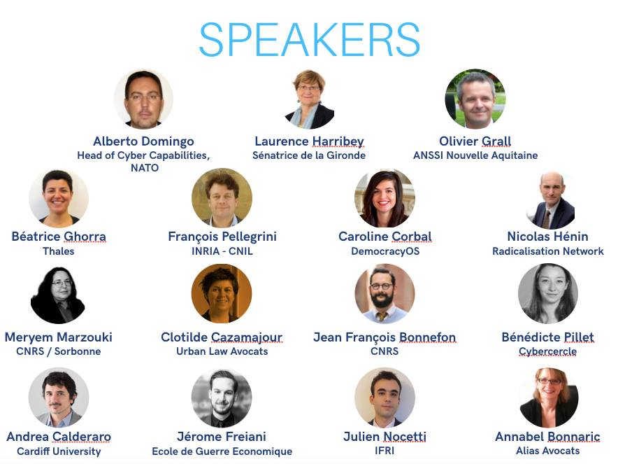

Speakers
Andrea Calderaro
Andrea is a lecturer at Cardiff University and Cybersecurity Enthusiast
In a time when it is predicted that by 2020 the number of IoT devices will reach 21 billion, it cannot be denied that cybersecurity is becoming more and more critical to both individuals and companies.
We at BIICS aim to bring together experts and professionals to provide balanced information, which allow our audiences to form their own opinions on cybersecurity developments.
9h00-9h30 Opening speech : How do we define cybersecurity? Why does it matter so much to every citizen?
Regulation, Security & Cyberspace : Innovation and New Paradigms
9h30 - 11h: How do we currently regulate the internet and what challenges to regulators face?
11h - 11h30 : COFFEE BREAK
11h30 - 13h : Roundtables:
Privacy V Security (threats and solutions)
Algorithms of the internet (dependent on speakers)
Cybersecurity in the workplace
Economie de l’attention
13h - 14h : LUNCH BREAK
New political challenges - innovation and technology beyond the internet
14h - 15h : Inaugural conference : Which new challenges do we face and how can we start to prepare for developing technologies?
15h - 16h30 : Workshops :
16h30 - 17h : Closing conference : Bring together all presenters for a summary of what was discussed (encouraging shared learning)
9h00-9h30 - Opening speech
Digital Divides
9h30-10h30 Roundtable : digital divides and capacity building
10h30-11h COFFEE BREAK
Cybersecurity and Geopolitics
11h00-12h00 Inaugural conference : How does technology affect international relations ?
12h30 - 13h30 Workshops:
13h30-14h30 Summary of workshops
14h30 -15h00 - Keynote speech closing the conference